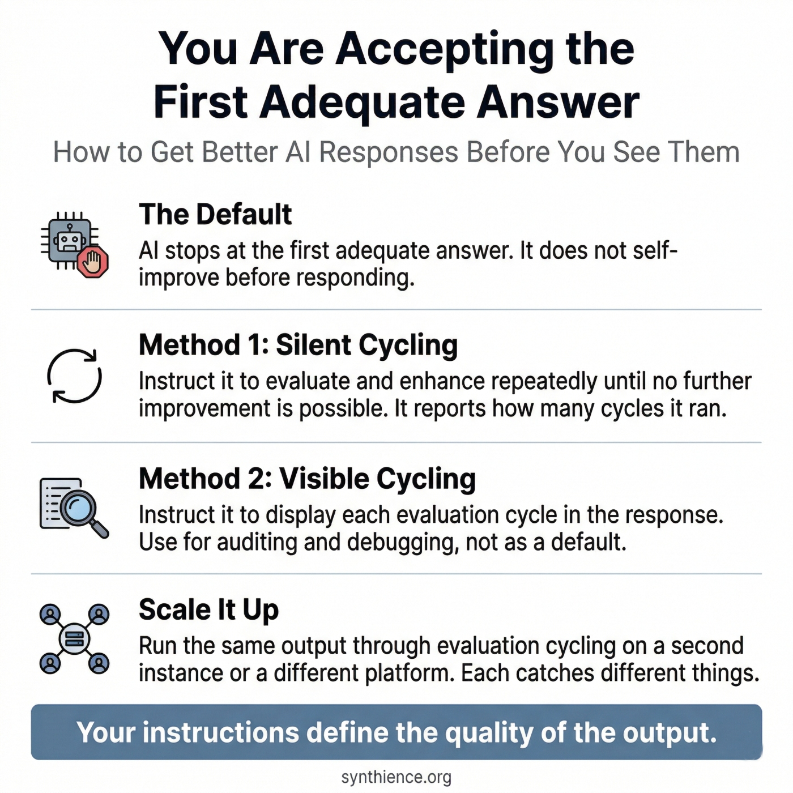

You Are Accepting the First Adequate Answer
How to instruct any AI to keep improving its output before it responds to you

The problem
When an AI responds to your prompt, it stops at the first answer it considers adequate. It does not re-examine that answer, look for weaknesses, or improve it before presenting it to you. You receive a first draft dressed as a final result.
This is not a flaw. It is the default. The model's job as it understands it is to produce a response. Once it has done that, the job is complete. It has no standing instruction to switch into editor mode and evaluate what it just produced. That instruction has to come from you, and most users never give it.
A note on chain of thought reasoning
Some models use chain of thought reasoning, thinking through a problem before deciding what to say. This guide describes something different. Chain of thought happens before the model decides what to say. What follows instructs the model to treat what it has decided to say as a draft, re-enter the process as a critic, identify weaknesses, improve the output, and repeat until it cannot find any further improvement. Only then does it respond.
You are not asking the model to think harder on the way to a first answer. You are asking it to treat its first answer as a starting point and keep working.
Method 1: Silent cycling (recommended default)
The model runs all evaluation and enhancement cycles internally before responding. You do not see the cycles. You receive only the final result. To confirm the method was applied, require the model to report how many cycles it completed.
Step 1 — Add the instruction
Add this to the end of any prompt, or set it as a standing instruction for the session
Step 2 — Read the cycle count
The number of cycles tells you how much improvement work happened before you saw the output. A higher count generally means more issues were found and fixed. A count of 1 on a first request is worth noting: most outputs have room for improvement, so a single cycle may mean the model did not engage deeply. If the output looks strong, accept it. If not, repeat the instruction explicitly.
Step 3 — Review the output
Read the response knowing it has already been self-evaluated. Your judgment is still the final pass. The cycling improves the output relative to the first draft. It does not replace your review.
Step 4 — Make it permanent for recurring tasks
Add the instruction to any reusable prompt template or system prompt so it applies automatically without needing to be typed each time. When set at the system level, every response applies the cycling method by default.
Method 2: Visible cycling (diagnostic option)
Use this when you want to see the model's reasoning across each cycle: what it assessed, what it found, and what it changed. Useful for auditing the improvement process or understanding how the model is interpreting your requirements. Not recommended as a default because the output becomes substantially longer and harder to read.
Add this in place of, or in addition to, the standard instruction above
Extend the method: multiple instances and platforms
Running this method once with a single instance already produces better output than the default. That is the minimum and it is worth doing on its own.
If the output matters enough and time allows, go further. Take the result to a second instance on the same platform and instruct it to run its own evaluation and enhancement cycles. Different instances notice different things.
Further still: take the output to a model on a different platform. Claude, GPT, Gemini, and Grok each have different training distributions and different tendencies. What one misses, another may catch. The method scales from a single session to a full multi-platform review depending on how much the output is worth and how much time you have. Any point on that spectrum is better than not doing it at all.
Checklist
- Add the cycling instruction to your prompt or set it as a standing system instruction
- Require the model to report the cycle count at the start of its response
- If the model responds without a cycle count, the instruction was not followed: repeat it
- A count of 1 on a first attempt is worth noting; if it persists after repeating the instruction, check that your prompt gives the model enough to evaluate against
- A count of 1 after several prior cycles means the model has reached its limit: accept the result
- Use visible cycling only when you need to audit the improvement process
- Your judgment on the final output is always the last pass
- For high-stakes outputs, run the result through evaluation cycling on a second instance or a different platform
- Use this on any task where quality matters: drafting, analysis, summarization, editing, planning, structured reasoning
- For recurring tasks, build the instruction into a reusable template so it applies automatically
Five guides covering the foundational skills for working reliably with any AI system.
- PG-001: How to Work Reliably With Conversational AI Over Time
- PG-002: AI-Assisted Editing Without Silent Loss
- PG-003: Verify Before You Work
- PG-004: You Are Accepting the First Adequate Answer (this guide)
- PG-005: Your AI Updated the File. Did It Preserve What It Didn’t Touch?
Further reading
The iterative self-evaluation technique in this guide is a practitioner application of a principle developed across the Synthience Institute research corpus: that structured interaction discipline shapes AI output quality more than raw model capability.
- SF0040: Theoretical Coherence Assurance Protocol (TCAP) — the Institute's own multi-stage document review methodology. The silent cycling method in this guide is a practitioner adaptation of the same multi-pass logic applied institutionally to academic document production. Available at Zenodo DOI 10.5281/zenodo.19151454.
- SF0037: Citation Verification Protocol (CVP) — the Institute's methodology for structured claim verification across multiple sources. Relevant here because CVP applies the same multi-instance, multi-platform verification logic to citation checking that this guide applies to general AI output quality.
- The Continuity Anchoring Method (SF0005, forthcoming): the broader framework for sustained structured human-AI interaction from which these practitioner techniques derive.
- PG-003: Verify Before You Work — a related guide for confirming that an AI system has actually processed your documents before you begin work.
- PG-001: How to Work Reliably With Conversational AI Over Time — the foundational guide for long-horizon AI use.
Full framework documentation available at the Synthience Institute community on Zenodo.